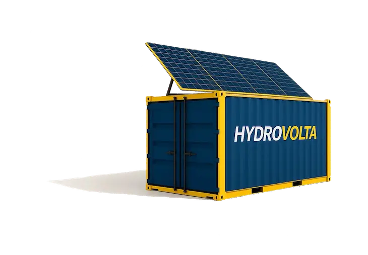
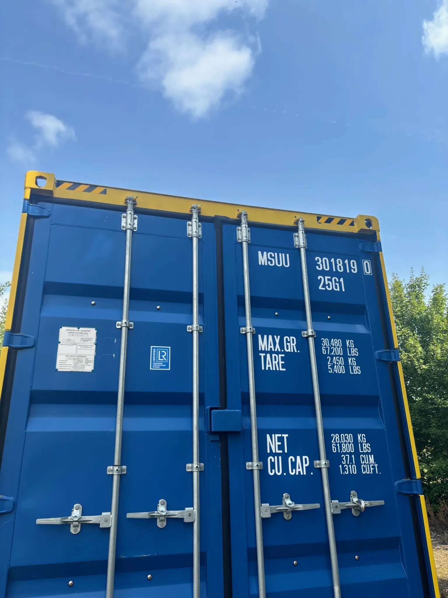

High-recovery groundwater desalination
For brackish wells, hard groundwater, saline intrusion, nitrate/salinity challenges, agriculture, utilities, remote communities and industrial users that need more usable water with lower residual brine.
HydroVolta’s core business is high-recovery treatment of brackish, hard and saline groundwater. Where residual brine has the right chemistry, we extend the project into valorization: acid/base recovery, selected mineral recovery and pilot pathways for existing desalination brine owners.

The website must not make HydroVolta look like a company chasing every water problem. The main story is groundwater desalination. Brine valorization is introduced only as an added value layer when the chemistry and economics support it.
For brackish wells, hard groundwater, saline intrusion, nitrate/salinity challenges, agriculture, utilities, remote communities and industrial users that need more usable water with lower residual brine.
For HydroVolta projects where residual brine can become a value stream, and for existing desalination operators seeking HCl, NaOH, calcium hydroxide or magnesium hydroxide pilot pathways.
SalinBloc™ gives HydroVolta a repeatable modular platform. Larger skid-mounted process trains are introduced after pilot data supports the scale-up case.

20 ft / 40 ft modular units for pilots, decentralized groundwater treatment and modular deployment.

Electrodialysis with ultrasound-assisted scaling mitigation and selective ion removal configuration.

Bipolar membrane electrodialysis stacks for selected acid/base recovery pilots from desalination brines.
The website should speak to serious operators who own a difficult water source or a concentrated brine stream, not casual visitors looking for generic desalination.
Brackish wells, nitrate/salinity control, aquifer resilience and staged pilot validation.
Hard and saline groundwater treatment for irrigation and livestock water reliability.
Process water, internal reuse, discharge reduction and high-recovery concentrate management.
BPED pilots for HCl/NaOH and mineral recovery pathways from suitable brines.
Institutional partners and backing
HydroVolta qualifies projects by source water, target use, flow capacity, discharge limits and brine chemistry. We will tell you if SonixED™ or a brine valorization pathway is not the right fit.